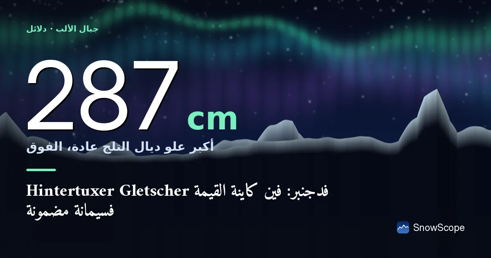

Hintertuxer Gletscher فدجنبر: فين كاينة القيمة فسيمانة مضمونة
سؤال التلج فـ Hintertux حل بالتمام: فراير 15 نورمال الذروة (3245 م) فيها 98 سم، و فـ أسبوع 15-21 فراير كل شتا من 46 سنة فاتت كان فيها 30 سم أو أكثر هنا فوق. الخيار الحقيقي هو واش السعر و الطقس ديالك يناسبوك فـ الأسبوع ديالك.
شوف توقعات التلج مباشرة ديال Hintertuxer Gletscher فالتطبيق ديال SnowScopeالعلو ديال التلج، التنبيهات والخريطة 3D، فابور.
من الفوق الفوقانية: التلج مضمون
فـ وسط الجبل (2372 م) نورمال فراير 15 فيه 52 سم. فـ أسبوع 15-21 فراير، 87 من 100 شتا فاتت فيهم 30 سم أو أكثر؛ بسلو عيد الميلاد الرقم يطلع فـ 93 من 100. حتا فـ السنة الضعيفة (1 من 10 شتاوات) فيه 44 سم فـ الفوق فراير 15، و الشتا اللي فاتت، اللي كانت أضعف من النورمال، أعطات 44 سم هنا فوق.
التلج فـ الفوق يبقى غزير حيت يتساقط بديري. أول يوم فيه 30 سم فـ الأرض بـ الذروة هو 29 شتنبر؛ فـ وسط الجبل هو 23 أكتوبر. بسلو فراير، الجلاسيير عندها شهور متراصة ديال التراكم.


مشكلة الوادي فراير
محطة الفراغ قاعدة ب 1500 م، و فراير هنا قليل. نورمال فراير 15 فيه بغاية 16 سم هنا، و بغاية 7 من 100 شتا فاتت فيهم 30 سم أو أكثر فـ أسبوع 15-21 فراير. أول يوم نورمال فيه غطاء كافي باش نسكيو بـ أمان فـ الوادي هو 7 يناير.
فراير فـ Hintertux نتعطيك حاسب ب سكي من النص الفوقاني و نركبو المصاعيد باش ننزلو. البيستات ديال سفل تكون بونص إذا كان التلج أغزير من النورمال، ما بغاينش كون البلان.
السعر: ثمن واحد، ما فيهاش تخفيفة فراير
بطاقة يوم واحد ديال الكبير تكلف 82 EUR كل الموسم؛ بطاقة 6 أيام تكلف 399 EUR. ما فيهاش طبقة أرخص قبل عيد الميلاد، هكاك فراير التمن يقول مثل فبراير. هاد التاني مختاليف من المحطات اللي تعطي سعر ديال البداية.
التوفير هو ديال العايلات: الصغار اللي تولدو بعد 1 يناير 2021 ركبو مجاني مع الكبير (غتاع البطاقة ديالهم). لـ عايلة فيها صغير، هاد التبديل أكبر من أي تخفيفة ديال الموسم.
الشتا ديال هاد السنة بحال الشتاوات اللي فاتو
التلج ديال فراير فـ الفوق بقا ثابت على 46 شتا: النورمال كان 95 سم فـ أول 15 شتا و 101 سم فـ آخر 15. الجلاسيير تحفظ وعدها ديال فراير. فـ وسط الجبل الصورة ختلافة: النورمال ديال فراير نزل من 54 سم فـ أول 15 شتا ل 45 سم فـ آخر 15.
هاد الاتجاه مهم إذا بغيتي تسكيو البيستات ديال الفوق كل الأسبوع. وسط الجبل كان موثوق أكتر فـ الشتاوات اللي فاتو، بس بقا فوق خط 30 سم ديال الراحة فـ أغلب السنوات.
Hintertux مقابل Kitzsteinhorn
Kitzsteinhorn فـ فوق Kaprun هو أقرب جلاسيير لـ المقارنة. الجوج يتاخدو 82 EUR بطاقة يوم فـ الموسم الكبير. فـ Kitzsteinhorn نورمال فراير 15 فيه 137 سم بـ الفوق (3024 م)، بس بغاية 40 سم فـ وسط الجبل (1894 م). Hintertux فيها 52 سم فـ وسط الجبل لنفس السعر ديال اليوم.
بطاقة 6 أيام ديال فراير، Hintertux تكلف 399 EUR ضد 440 EUR ديال Kitzsteinhorn. إذا بغيتي تسكيو البيستات ديال الوسط أسبوع فراير، Hintertux تعطيك تلج أكتر و قيمة أحسن.
واش نزاولو هاد الجلاسيير
اختار Hintertux إذا كانت عندك أسبوع محدد فراير، ما كاينش فرصة تبديل التاريخ و بغيتي الضمان فـ الفوق. الأرقام تدعم هاد الخيار. إذا كاينش فرصة تستنا توقعة زينة أو تبدل الأسبوع ديالك، محطة فـ جنة عالية مع سعر ديال البداية ممكن تكون أرخص و تعطيك تنويع أكتر.
نصايح للي كيتزلجو
- حسب تسكيو من حوالي 2372 م فـ الفوق فراير؛ اركب المصاعيد باش تنزل. البيستات ديال الوادي نادرا تكون ممكن السكي فيها فراير.
- جيب دليل الميلاد ديال الصغار اللي تولدو بعد 1 يناير 2021؛ هوما يسكيو مجاني مع الكبير (البطاقة غتاعة مطلوبة).
- فراير فـ 3245 م بارد و غالب الوقت فيه ريح. جيب قناع لـ الوجه، قفاز ديال الاحتياط و محماة اليدين.
- السكي خارج البيست فـ جلاسيير فيها كريفاس مخبية؛ رولح بغيدة وحد و شد النشرة الرسمية ديال الانهيارات من Avalanche.report – Euregio Tyrol.
على هاد الأرقام
العلو ديال التلج فالمحطات هو أكثر تلج فالجهة الفوقانية فالتاريخ المكتوب؛ هادو تقديرات لمنطقة، ماشي قياس فنقطة وحدة. التوقعات يمكن تتبدل. ديما شوف النشرة الرسمية ديال الانهيارات قبل ما تخرج من البيست.
النشرات الرسمية ديال الانهيارات: Avalanche.report – Euregio Tyrol
كيفاش تستاشهد بهاد المقال
للبحث، التعليم ولا الصحافة: الأرقام والرسومات تقدر تعاود تخدم بيهم بحرية تحت CC BY 4.0 مع هاد الاستشهاد.
SnowScope (2026), Hintertuxer Gletscher فدجنبر: فين كاينة القيمة فسيمانة مضمونة, https://snowscope.app/blog/ar/2026/11/hintertux-glacier-december-value-ski-week.html, تشاف ف 2026-11-14
SnowScope (Atlas Labs). (2026, November 14). Hintertuxer Gletscher فدجنبر: فين كاينة القيمة فسيمانة مضمونة. SnowScope snow reports. https://snowscope.app/blog/ar/2026/11/hintertux-glacier-december-value-ski-week.html
BibTeX
@misc{snowscope2026hintertuxglacierdecember,
author = {{SnowScope (Atlas Labs)}},
title = {Hintertuxer Gletscher فدجنبر: فين كاينة القيمة فسيمانة مضمونة},
year = {2026},
month = nov,
howpublished = {\url{https://snowscope.app/blog/ar/2026/11/hintertux-glacier-december-value-ski-week.html}},
note = {Published 2026-11-14 13:29 UTC; accessed 2026-11-14}
}· CC BY 4.0 · الطريقة، الداتا والأدوات →
Hintertuxer Gletscher: التلج والحرارة حسب العلو، هاد الشتا مقارنة مع اللي فاتت (الأدوات) →
تابع Hintertuxer Gletscher
فابور: ميساج ملي يجي التلج، والتوقعات كل صباح.